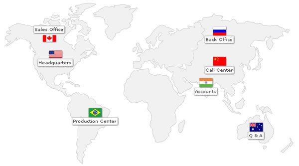
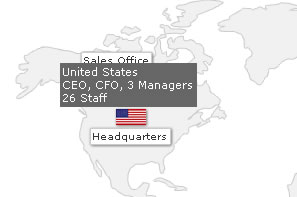

| Markers custom shapes & image icons |
Throughout our previous examples, we had used the default shapes provided by FusionMaps XT(circle, arc, diamond or triangle) as our marker shapes and customized their border and background color. However, FusionMaps XT provides you with many more options for marker shapes like defining your custom shape and loading external images as icons. To do so, you'll need to use the SHAPES feature of markers, as explained here. Before jumping to any code, let's see an example first.  In the above map, we've used custom image icons to show various offices around the world. Also, we've used custom tool text for each marker to show more information, as shown below:  The XML code for this map can be reproduced as under: |
<map animation='0' showShadow='0' showBevel='0' showLabels='0' showMarkerLabels='1' fillColor='F1f1f1' borderColor='CCCCCC' baseFont='Verdana' baseFontSize='10' markerBorderColor='000000' markerBgColor='FF5904' markerRadius='7' legendPosition='bottom' useHoverColor='0' showToolTip='0' showMarkerToolTip='1' > <data> <entity id='NA' /> <entity id='SA' /> <entity id='EU' /> <entity id='AS' /> <entity id='AF' /> <entity id='AU' /> </data> <markers> <definition> <marker id='CA' x='116.65' y='94.85' label='Sales Office' labelPos='top'/> <marker id='US' x='131.57' y='133.22' label='Headquarters' labelPos='bottom'/> <marker id='CN' x='532.3' y='150.68' label='Call Center' labelPos='bottom'/> <marker id='BR' x='228.55' y='276.03' label='Production Center' labelPos='bottom'/> <marker id='AU' x='621.83' y='311.21' label='Q & A' labelPos='bottom'/> <marker id='RU' x='532.3' y='76.73' label='Back Office' labelPos='bottom'/> <marker id='IN' x='499.26' y='202.5' label='Accounts' labelPos='bottom'/> </definition> <shapes> <shape id='USMap' type='image' url='Resources/us_flag.jpg' labelPadding='12' /> <shape id='CAMap' type='image' url='Resources/canada_flag.jpg' labelPadding='12' /> <shape id='CNMap' type='image' url='Resources/china_flag.jpg' labelPadding='12' /> <shape id='BRMap' type='image' url='Resources/brazil_flag.jpg' labelPadding='12' /> <shape id='AUMap' type='image' url='Resources/aus_flag.jpg' labelPadding='12' /> <shape id='RUMap' type='image' url='Resources/rus_flag.jpg' labelPadding='12' /> <shape id='INMap' type='image' url='Resources/ind_flag.jpg' labelPadding='12' /> </shapes> <application> <marker id='CA' shapeId='CAMap' toolText='Canada<BR>2 Managers<BR>11 Staff'/> <marker id='US' shapeId='USMap' toolText='United States<BR>CEO, CFO, 3 Managers<BR>26 Staff'/> <marker id='CN' shapeId='CNMap' toolText='China<BR>1 Manager<BR>7 Support Staff'/> <marker id='BR' shapeId='BRMap' toolText='Brazil<BR>COO, 2 Managers<BR>32 Factory Staff'/> <marker id='AU' shapeId='AUMap' toolText='Australia<BR>1 Manager<BR>(Outsourced Agency)'/> <marker id='RU' shapeId='RUMap' toolText='Russia<BR>1 Manager<BR>6 Staff'/> <marker id='IN' shapeId='INMap' toolText='India<BR>1 Manager<BR>5 Accountants'/> </application> </markers> <styles> <definition> <style name='TTipFont' type='font' isHTML='1' color='FFFFFF' bgColor='666666' size='11'/> <style name='HTMLFont' type='font' color='333333' borderColor='CCCCCC' bgColor='FFFFFF'/> <style name='myShadow' type='Shadow' distance='1'/> </definition> <application> <apply toObject='MARKERS' styles='myShadow' /> <apply toObject='MARKERLABELS' styles='HTMLFont,myShadow' /> <apply toObject='TOOLTIP' styles='TTipFont' /> </application> </styles> </map> |
Though the XML looks pretty long because of a lot of things we've put up in this, we'll concentrate on just the custom shapes part. You'll see that we've introduced the new <shapes> and its children <shape> elements in this code. These elements help you define custom shapes that markers on your map can use. Note that it's not necessary to define <shapes> or <shape> to use markers. If not defined, you can still use the default marker shapes provided by FusionMaps XT. Each custom shape needs to be present as a <shape> element (inside <shapes> element). It can have a lot of attributes as explained below. |
| Attributes for <shape> element. |
The <shape> element can have a lot of functional and cosmetic attributes. Of all of them, only the following are compulsory:
Additionally, you can set the following properties for each marker shape:
And, the following attributes apply only if you're plotting an image marker shape:
|